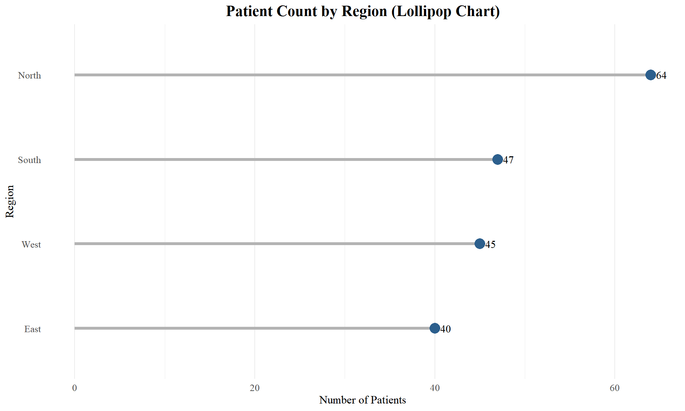
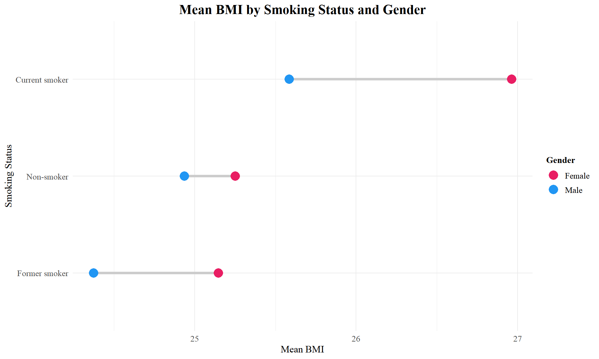
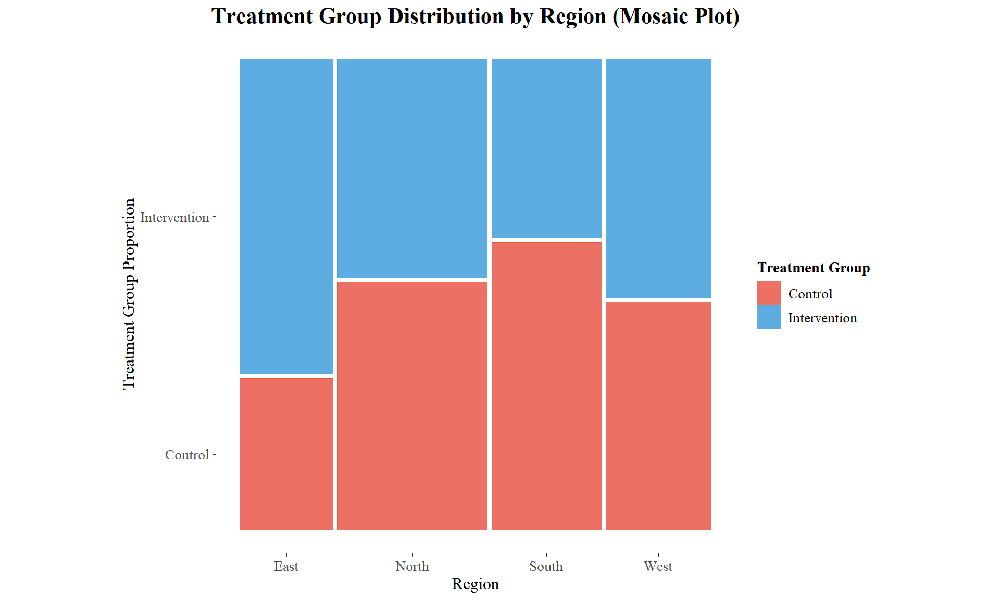
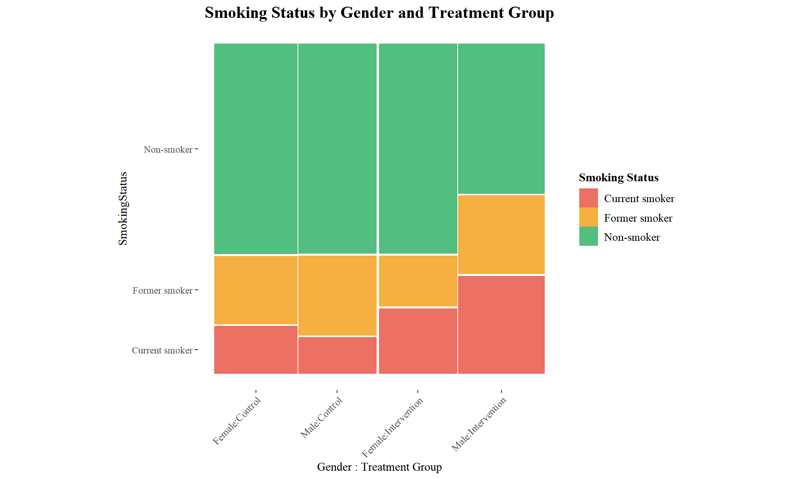
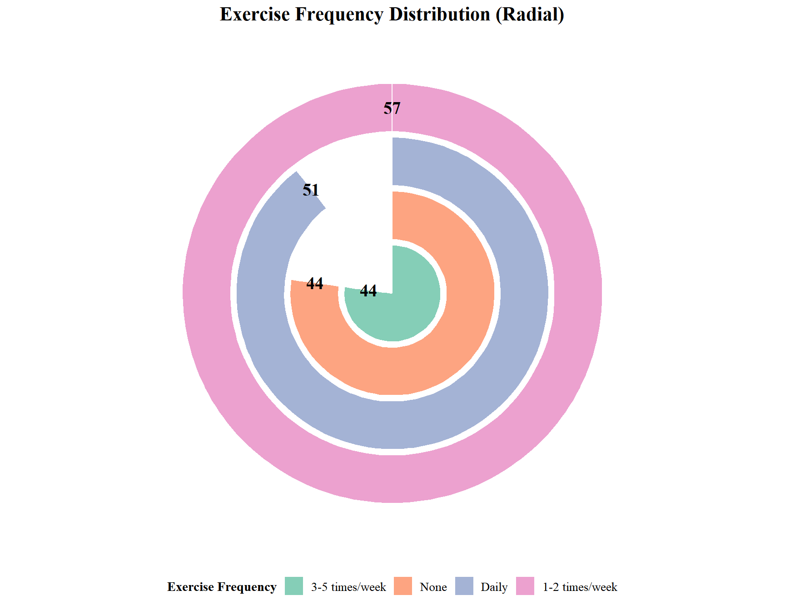

New Packages: - forcats for factor manipulation - ggmosaic for mosaic plots - Enhanced ggplot2 techniques
Setup
Code
# Load required librarieslibrary(ggplot2)library(dplyr)library(forcats) # For factor reorderinglibrary(ggmosaic) # For mosaic plots# Load datasetdata <- readxl::read_excel("../../data/PublicHealth_BP_Dataset.xlsx")# Clean data: remove missing values in key variablesdata_clean <- data %>%filter(!is.na(ExerciseFreq), !is.na(ChronicDisease))
Data Preview
# A tibble: 10 × 3
Region SmokingStatus n
<chr> <chr> <int>
1 East Current smoker 11
2 East Former smoker 6
3 East Non-smoker 23
4 North Current smoker 9
5 North Former smoker 15
6 North Non-smoker 40
7 South Current smoker 9
8 South Former smoker 13
9 South Non-smoker 25
10 West Current smoker 8
Lollipop Chart
Lollipop Chart - Code
🟢 Goal: Ranking (cleaner alternative to bars)
Code
# Calculate counts and prepare for ordered lollipopregion_counts <- data_clean %>%count(Region) %>%arrange(n) # Sort for proper ordering# Create lollipop chartggplot(region_counts, aes(x = n, y =fct_reorder(Region, n))) +geom_segment(aes(x =0, xend = n, y = Region, yend = Region),color ="gray70", size =1.5) +# Draw lollipop sticksgeom_point(size =5, color ="#2C5F8D") +# Draw lollipop headsgeom_text(aes(label = n), hjust =-0.5, family ="serif", size =4) +# Add count labelslabs(title ="Patient Count by Region (Lollipop Chart)",x ="Number of Patients", y ="Region") +theme_minimal(base_family ="serif") +theme(plot.title =element_text(hjust =0.5, size =16, face ="bold"),axis.title =element_text(size =12),panel.grid.major.y =element_blank()) # Remove horizontal grid
Lollipop Chart - Plot

Interpreting Lollipop Charts
Reading Lollipop and Dot Plots
Using the previous plot:
OBSERVATION: - East region: ~40 patients (lowest) - West and South: ~45 patients each (middle tier) - North region: ~65 patients (highest, ~60% more than East) - Clear ranking from bottom to top - Relatively balanced except North dominance
INTERPRETATION: - North region significantly overrepresented - East region undersampled
- West and South balanced - May reflect population distribution or recruitment success - Geographic imbalance could affect generalizability
IMPLICATIONS: - Regional stratification needed in analysis - Results may skew toward North region characteristics - Consider weighting by region for national estimates - Recruitment challenges in East region
ACTIONS: - Include region as covariate in models - Report results stratified by region - Consider regional subgroup analyses - Investigate reasons for North oversampling
:::
Cleveland Dot Plot
Cleveland Dot Plot - Code
🟢 Goal: Compare values across two groups
Code
# Calculate mean BMI by smoking status and genderbmi_summary <- data_clean %>%filter(Gender %in%c("Male", "Female")) %>%# Focus on main gendersgroup_by(SmokingStatus, Gender) %>%summarise(Mean_BMI =mean(BMI, na.rm =TRUE), .groups ="drop")# Create Cleveland dot plotggplot(bmi_summary, aes(x = Mean_BMI, y =fct_reorder(SmokingStatus, Mean_BMI),color = Gender, group = Gender)) +geom_line(aes(group = SmokingStatus), color ="gray80", size =1.5) +# Connect dotsgeom_point(size =5) +# Add colored dotsscale_color_manual(values =c("Female"="#E91E63", "Male"="#2196F3"),name ="Gender") +labs(title ="Mean BMI by Smoking Status and Gender",x ="Mean BMI", y ="Smoking Status") +theme_minimal(base_family ="serif") +theme(plot.title =element_text(hjust =0.5, size =16, face ="bold"),axis.title =element_text(size =12))
Cleveland Dot Plot - Plot

Mosaic Plot
Mosaic Plot - Code
🔴 Goal: Part of Whole + Show categorical associations
Code
# Create mosaic plot showing relationship between Region and Treatment Groupggplot(data = data_clean) +geom_mosaic(aes(x =product(TreatmentGroup, Region), fill = TreatmentGroup)) +# Create mosaic tilesscale_fill_manual(values =c("Control"="#E74C3C", "Intervention"="#3498DB"),name ="Treatment Group") +labs(title ="Treatment Group Distribution by Region (Mosaic Plot)",x ="Region", y ="Treatment Group Proportion") +theme_mosaic(base_family ="serif") +theme(plot.title =element_text(hjust =0.5, size =16, face ="bold"),axis.title =element_text(size =12),axis.text.x =element_text(angle =0))
Mosaic Plot - Plot

Interpreting Mosaic Plots
How to Read Mosaic Plots
Using the previous plot:
Key Principle: Area = Proportion (not just height or width!)
OBSERVATION: - North region: Widest column (~40% of total width) = most patients - All regions: Treatment groups roughly 50-50 split (equal heights within columns) - Tiles aligned horizontally = no strong association - East region: Narrowest column (~20% width) = fewest patients
INTERPRETATION: - Width of columns: Regional sample sizes (North > South ≈ West > East) - Height within columns: Treatment allocation within each region - Alignment: Horizontal edges align = random assignment successful - No association: Treatment group independent of region (good randomization!)
IMPLICATIONS: - Randomization worked well across all regions - No geographic bias in treatment allocation - Can analyze regions separately without treatment imbalance concern - Balanced design supports causal inference
Reading Mosaic Tips: - Misaligned tiles = association exists - Aligned tiles = independence (no association) - Area, not just height, represents proportion - Compare conditional distributions (within columns)
:::
Mosaic Plot - Three Variables
Complex Mosaic - Code
🔴 Goal: Multi-way categorical analysis
Code
# Three-way mosaic: Gender × Smoking × Treatmentggplot(data = data_clean %>%filter(Gender %in%c("Male", "Female"))) +geom_mosaic(aes(x =product(SmokingStatus, Gender, TreatmentGroup), fill = SmokingStatus),divider =ddecker()) +# Use double-decker layoutscale_fill_manual(values =c("Current smoker"="#E74C3C","Former smoker"="#F39C12","Non-smoker"="#27AE60"),name ="Smoking Status") +labs(title ="Smoking Status by Gender and Treatment Group",x ="Gender : Treatment Group") +theme_mosaic(base_family ="serif") +theme(plot.title =element_text(hjust =0.5, size =15, face ="bold"),axis.text.x =element_text(angle =45, hjust =1, size =9))
Complex Mosaic - Plot

Radial Bar Chart
Radial Bar Chart - Code
🟢 Goal: Ranking with visual appeal (use sparingly!)
Code
# Prepare data for radial plotexercise_counts <- data_clean %>%count(ExerciseFreq) %>%mutate(ExerciseFreq =fct_reorder(ExerciseFreq, n))# Create radial bar chartggplot(exercise_counts, aes(x = ExerciseFreq, y = n, fill = ExerciseFreq)) +geom_col(alpha =0.8, color ="white", size =1) +# Create barscoord_polar(theta ="y") +# Transform to circular coordinatesscale_fill_brewer(palette ="Set2", name ="Exercise Frequency") +geom_text(aes(label = n), position =position_stack(vjust =0.5),family ="serif", size =5, fontface ="bold") +# Add labelslabs(title ="Exercise Frequency Distribution (Radial)",x =NULL, y =NULL) +theme_minimal(base_family ="serif") +theme(plot.title =element_text(hjust =0.5, size =16, face ="bold"),axis.text =element_blank(),axis.ticks =element_blank(),panel.grid =element_blank())
Radial Bar Chart - Plot

Quick Reference
Categorical Intermediate - Summary
Chart Type
Goal
When to Use
Code Lines
Lollipop
🟢 Ranking
Cleaner than bars, 5-20 categories
10-15
Cleveland Dot
🟢 Compare Groups
Show differences between 2 groups
10-15
Mosaic (2-way)
🔴 Part + Association
Test independence of 2 categorical variables
10-15
Mosaic (3-way)
🔴 Multi-way
Complex categorical relationships
15-20
Radial Bar
🟢 Ranking
Presentations, cyclical data
12-18
Key Takeaways
When to use each: - Lollipop > Bar: When you have many categories or want cleaner look - Cleveland Dot: Perfect for before/after or male/female comparisons
- Mosaic: Test if two categorical variables are independent - Radial: Use sparingly (harder to read), good for presentations
Pro Tips: - fct_reorder() from forcats package is essential for proper ordering - Mosaic aligned tiles = independent, misaligned = associated - Remove gridlines for cleaner lollipop charts - Always label mosaic plot axes clearly (area = proportion!)
Common Mistakes: - Using radial charts for data without circular nature - Too many categories in mosaic plots (>12 becomes unreadable) - Not ordering lollipop charts by value - Misinterpreting mosaic plots (height alone doesn’t show proportion)
Practice Exercise
Your Turn:
Create a lollipop chart of patient count by ChronicDisease type
Make a Cleveland dot plot comparing mean SysBP_0m by SmokingStatus and Gender
Create a mosaic plot testing independence of AlcoholUse and SmokingStatus
Interpret: Are alcohol use and smoking independent or associated?